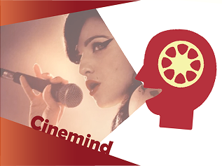
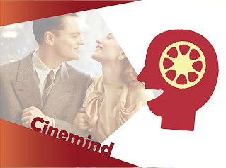
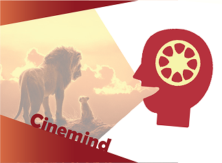
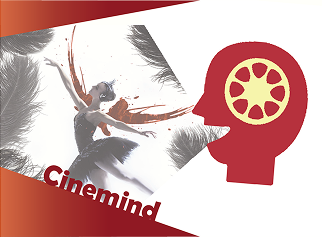
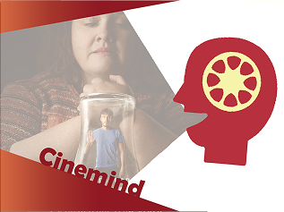

Cinemind
Episodes
-

Aflevering 1: De strijd tegen verslaving
Met The Dark Knight, American Psycho, en Se7en als onze gidsen analyseren we wat deze films ons vertellen over empathie, moraal, en vooral de afwezigheid daarvan.
-

Aflevering 2: De charme van de psychopaat
Met The Dark Knight, American Psycho, en Se7en als onze gidsen analyseren we wat deze films ons vertellen over empathie, moraal, en vooral de afwezigheid daarvan.
-

Aflevering 3: Wanneer impulsie de regie overneemt
Vandaag bespreken we de psychologie achter Obsessieve-Compulsieve Stoornis (OCD), en kijken we met een kritisch oog naar de films: As Good As It Gets, The Aviator...
-

Aflevering 4: Emoties in rouw
Vandaag bespreken we de psychologie achter rouw en hoe films als Up, The Lion King en Coco ons al van jonge leeftijd prachtige, maar hartverscheurende verhalen..
-

Aflevering 5: De valkuilen van perfectionisme
Waarom zijn zoveel mensen geobsedeerd door succes? En waar ligt de grens tussen ambitie en zelfdestructie? Vandaag gaan we het hebben over de psychologie achter perfectionisme.
-

Aflevering 6: Wanneer impulsie de regie overneemt
Waarom zijn zoveel mensen geobsedeerd door succes? En waar ligt de grens tussen ambitie en zelfdestructie? Vandaag gaan we het hebben over de psychologie achter perfectionisme.